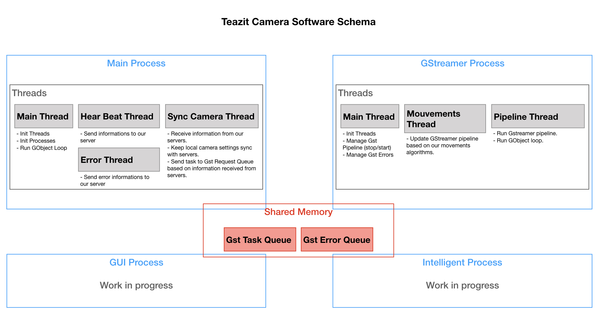

Teazit Software Cameras¶
On this page you will learn:
- How we architect our processes.
- Our Shared memory.
- The responsibility of each process.

Open Source¶
Under the hook, we are using multiple open-source projects that we like to thank.
Multiprocessing¶
Our software is currently built to take the full advantages of multiprocessing.
Main Process¶
This is our main process, the brain of our camera.
It has three main goals:
- Managing all the other processes (start, stop, restart, etc...)
- Managing the shared resources, the camera and network settings.
- Keeping the camera synchronize with our remote servers.
GStreamer Process¶
This process handle GStreamer pipeline.
It has two main goals:
- Managing GStramer pipeline.
- Starting our movements algorithms.
GUI Process¶
This process is optional, depending if you want to have a GUI interface to interact with our software. This process handle all the GUI events.
It has two main goals:
- Displaying useful user informations.
- Managing all GUI events.
IA Process¶
We have dedicated an IA Process to make sure we can take the full advantages of machine learning.
It has one main goals:
- Detecting Region of Interest in the images.